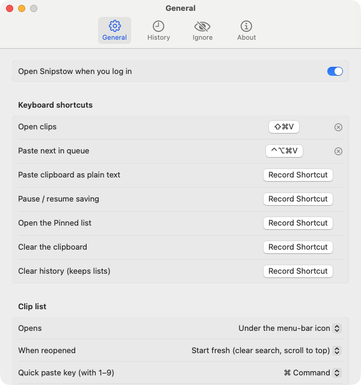

Everything you copy, stowed in your menu bar.
Snipstow keeps a searchable history of what you copy: text, links, images, files and colours, one click or keystroke away.
Free. For Macs with Apple silicon on macOS 14 Sonoma or later.
Try it: search, hover over a clip, or click one to copy it.

See the whole clip before you paste it.
Rest the pointer on a clip and its full contents open beside the list: the picture, the complete text or the files, with where it came from and when.
- Click to copy, press Return to paste straight into the app you're in.
- Paste as plain text when you don't want the formatting.
- Edit text or crop and rotate an image before you use it.

Keep the clips you reuse.
Pin snippets you paste every day, or make Smart Lists that gather clips for you: everything copied from Xcode, every link, anything from this week.
- Give a clip a title, like "Office address", and search finds it by name.
- Line up several clips and paste them one after another.
- Code is highlighted so you can tell your snippets apart at a glance.

Never leave the keyboard.
- ⇧⌘V
- Open your clips from anywhere
- ↩
- Paste the selected clip
- ⇧↩
- Paste it as plain text
- ⌘1
- Paste one of the first nine clips, 1 to 9
- Space
- Preview the selected clip
- ⌘P
- Pin it for later
- ⇥
- Switch between your lists
- Esc
- Close and get back to work
Your history stays on your Mac.
There's no account and nothing is uploaded. Snipstow only goes online to check for its own updates.
- Passwords copied from 1Password, Bitwarden and other password managers are never saved.
- Ignore any app, or skip one-time codes, card numbers and API keys automatically.
- Pause saving for a while, or skip just the next copy.

Install in a minute.
-
Drag it into Applications
Open the downloaded file and drag Snipstow onto the Applications folder.
-
Allow it to open
Snipstow isn't from the App Store, so macOS asks the first time. Click Done, then open System Settings, Privacy & Security, and click Open Anyway.
-
Let it paste for you
When you first pick a clip, turn on Snipstow under Accessibility. Then Return pastes straight into the app you're using.
Questions
Is Snipstow free?
Yes, completely: no trial, no subscription and no account.
Why does macOS say it can't verify Snipstow?
Apps from outside the App Store need a paid Apple review step to skip that message. Snipstow is shared without it, so macOS asks you to confirm once under Privacy & Security. After that it opens normally, and updates don't ask again.
How do updates work?
Snipstow checks once a day and shows a small notice when a new version is ready. Install it with one click, or right-click the menu-bar icon and choose Check for Updates. Every update is signed, and Snipstow only installs updates signed by its developer.
Does it work on Intel Macs?
No. Snipstow needs a Mac with Apple silicon (M1 or later) and macOS 14 Sonoma or later.
Where is my history kept, and how do I clear it?
In a single file in your user Library, readable only by your account. Clear it any time from the trash button in the list or in Settings, choose how long to keep history, or export and import it.
Can I use it with the Shortcuts app?
Yes. Snipstow adds actions to pause and resume saving, copy a clip, and get your recent clips as text.